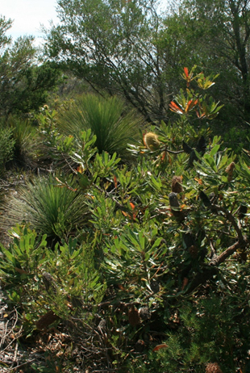

|
is working with Government agencies towards the establishment of Car-rang-gel Sanctuary on North Head at the gateway of Sydney Harbour - a flagship for Australia's environmental resolve and a celebration of our natural and cultural heritage. |
Car-rang-gel Sanctuary on North Head, Sydney

|
|
|
|
|
|
|
|
|
Research | Volunteering |
|
Click here to see photos and information about individual plants that are found in this ecological community.
|
 Eastern Suburbs Banksia Scrub |
What is Eastern Suburbs Banksia Scrub? Eastern Suburbs Banksia Scrub (ESBS) is a dry heathland scrub community that occurs on patches of nutrient-poor, ancient windblown (aeolian) dune sand. Known as a Wallum Sand Heath, it may contain small patches of woodland or low forest in wetter areas. A rich variety of shrubs and other plants occur in ESBS. The species present vary widely, depending on the soil, topography, time since disturbance and local weather. While few, if any, of the individual plant species characteristic of ESBS are rare or endangered, the whole plant community is found only between the Hawkesbury River and Royal National Park. Estimated to have occupied between 5355ha and 9643ha prior to European settlement, ESBS now remains on as little as 1-8% of its original area. As a consequence, ESBS is now recognised
as a Critically Endangered Ecological Community, likely to
disappear within the next 50 years if it is not managed to
reverse the threats to it. Those threats include clearing and
fragmentation, invasion by weeds and escaped garden plants,
grazing by rabbits, altered fire regimes, trampling and other
impacts of human access, loss of native species and climate
change. |
 Map of North Head showing the area of ESBS. The majority of this diminishing ecological community is found on the Sydney Harbour Federation Trust land, with smaller patches occurring on the surrounding Sydney Harbour National Park. |
 Bushfire  After a burn |
Fire and its
role in managing Eastern Suburbs Banksia Scrub
Like many of Australia’s plant species and
ecological communities, ESBS has evolved with fire. If fires are too
frequent some species do not have time to set seed and grow past
seedling stage. If left without fire for too long, a small number of
species (especially Coast Tea-tree) dominate, crowding out other
species and reducing the rich diversity of the community. The preferred interval between fires in ESBS
is 10-15 years, with some patches left unburnt for up to 30 years, in
a mosaic pattern. While fire is an important part of ESBS conservation, our studies at North Head highlight the importance of excluding rabbits during the post-fire period. The amount of rainfall in the months following a burn also determines the speed at which the ecological community can regenerate. |
 Xanthorrhoea after fire  Recovery after fire |
    Typical patches of Eastern Suburbs Banksia Scrub on North Head |
More information about ESBS
The ‘Eastern Suburbs Banksia Scrub of the Sydney Region’
ecological community was nominated for uplisting from
nationally Endangered to Critically Endangered status in 2018
and was prioritised for assessment in 2019. The ecological
community has been listed as Endangered under national
environment law, the Environment
Protection and Biodiversity Conservation Act 1999 (EPBC Act),
since 2000. Information on the currently listed ecological
community can be found at:
Eastern Suburbs Banksia Scrub in the Sydney region
|
 NHSF's native plant nursery was established in 2009 to assist in conserving the plants indigenous to North Head, and especially the species that together make up ESBS. Working under an approved licence to collect seed, our Nursery volunteers work regularly to collect, propagate, and maintain indigenous plants at planned locations across the Sydney Harbour Federation Trust's North Head site. While it is difficult to fully restore the complex mix of species that together form ESBS, the restoration of sites changed by past uses makes a significant contribution to the conservation of this Critically Endangered ecological community. |
|
|
|
|
|
|
|
|
|
Research | Volunteering |
|
|
Email: |
This page was coded for the North Head Sanctuary Foundation
by Judith Bennett.
Copyright
and Disclaimer